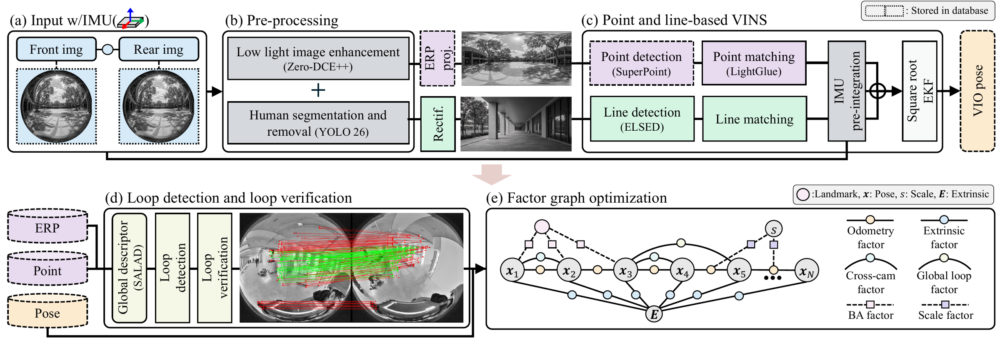
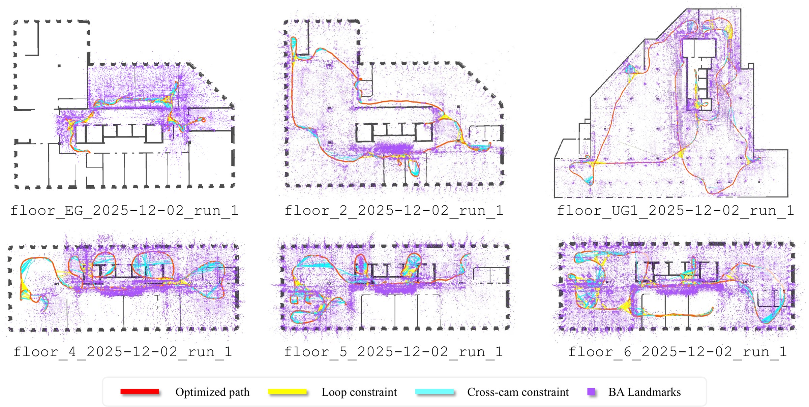

A 360-camera visual-inertial SLAM system
This report describes our submission to the 2026 Hilti–Trimble SLAM Challenge. The system is a 360-camera visual-inertial pipeline that uses only the provided dual-fisheye image streams and IMU measurements. First, raw images are preprocessed with low-light enhancement and static/dynamic masking, and then fed into a √VINS frontend as the local odometry, with deep learning-based SuperPoint features, ELSED line segments, and LightGlue matching. The resulting trajectory is refined using a GTSAM-based backend that performs tightly-coupled factor graph optimization with SALAD global descriptors and visual bundle adjustment (BA).
The backend performs local-to-global structureless BA, tightly regularized intrinsic and extrinsic refinement, and global scale adjustment supported by the known inter-camera baseline and cross-view constraints. The design targets long indoor sequences with dark regions, repetitive corridors, dynamic objects, and limited geometric parallax, while keeping the pipeline reproducible in the provided ROS2 workspace.
From two fisheye views to one optimized map

Input
The 360 camera as two calibrated fisheye views (EUCM model) with the IMU; all poses live in the
cam0 frame.
Pre-processing
Static masks, low-light enhancement (Zero-DCE++) and YOLO26 masks that suppress features on moving people.
Point & line VINS
√VINS frontend with SuperPoint + LightGlue points and ELSED lines under a vertical-world assumption.
Loop detection
SALAD global descriptors propose loops; SuperPoint–LightGlue verification across both fisheye views.
Factor graph
Odometry, BA, loop and cross-camera factors, plus regularized extrinsic, intrinsic and scale variables.
Maps on the floorplan
Bundle-adjusted landmarks and optimized trajectories on several indoor sequences of the challenge, overlaid on the building floorplan. The alignment to the floorplan was done manually, for visualization only.

Score
From the official evaluator report. The mean position error stays below 0.1 m across the evaluated sequences, with an average of 95.8 points per sequence.